Fotos
Fotos de Carolina
Fotos de Pablo
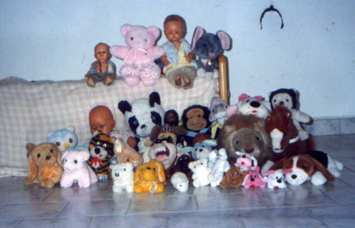
Los muñecos (los de verdad)
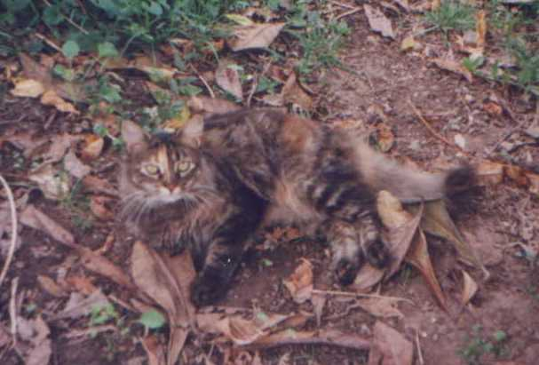
Yaiza (R.I.P.)
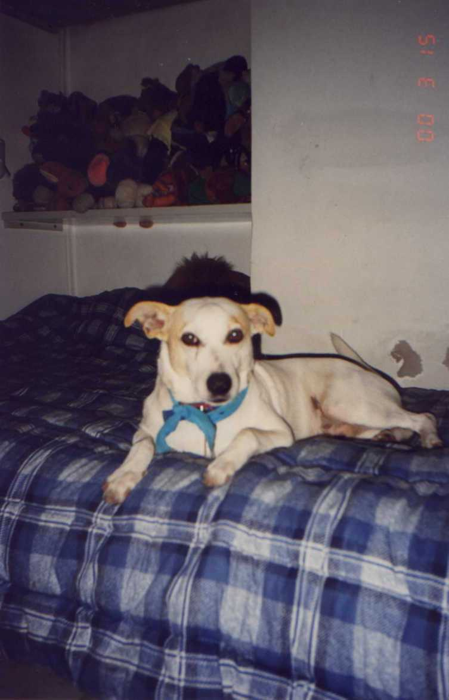
Hunter
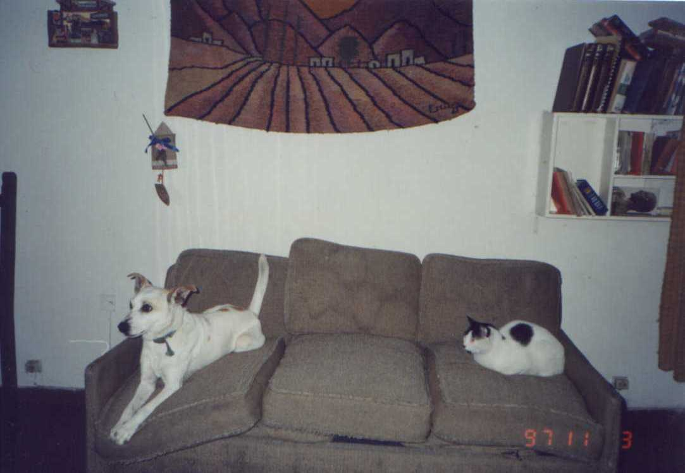
Muyita (R.I.P.) y Hunter
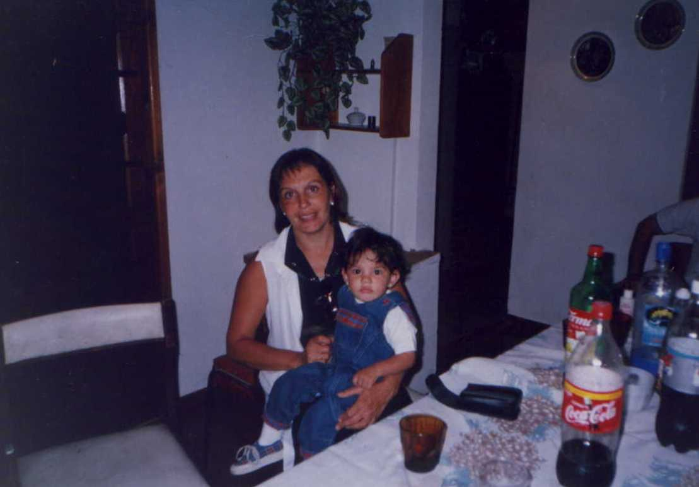
Iris, nuestra mamá y Giuliana, nuestra prima
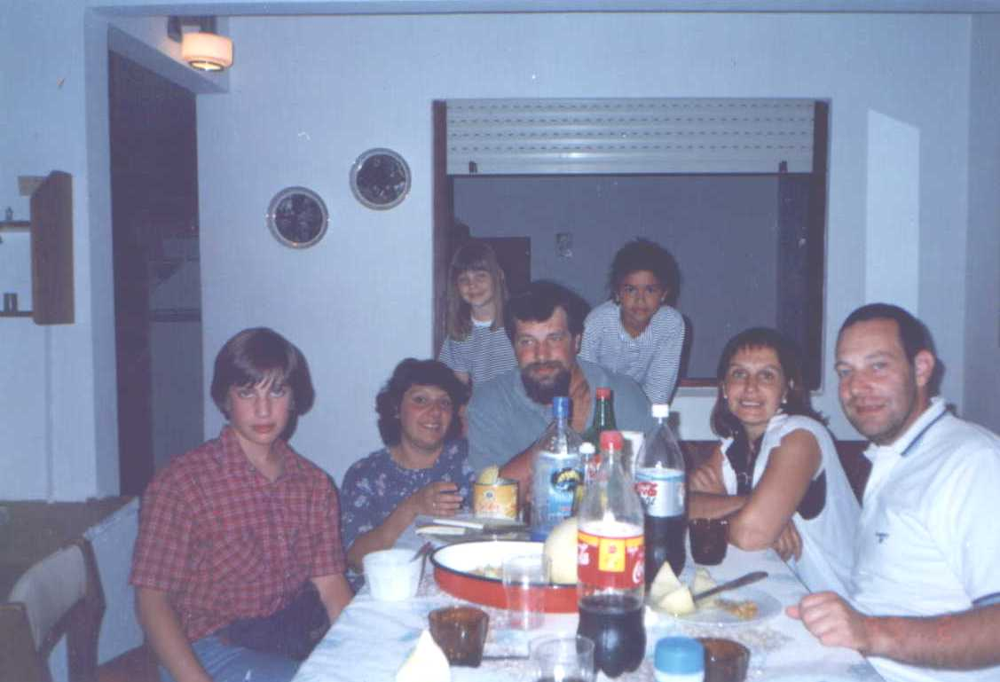
Foto con nuestros tíos y primas
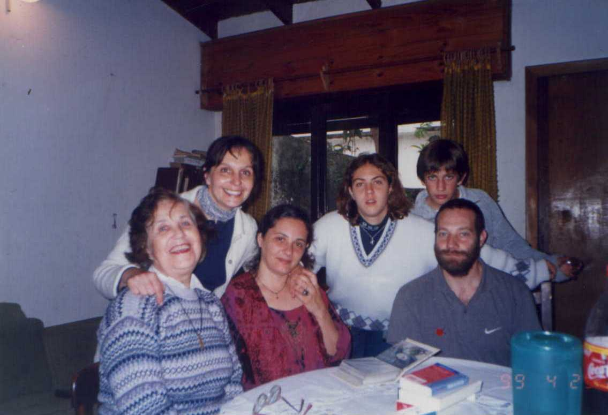
Foto con Sandra (una vieja amiga...), Patricia (nuestra prima) y nuestra abuela.
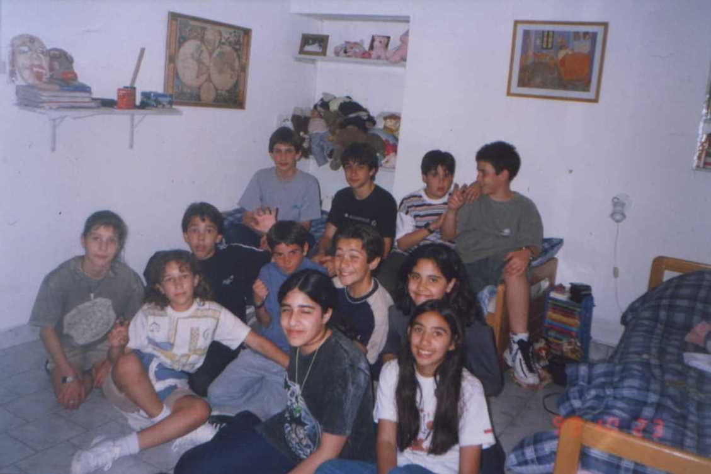
Amigos...
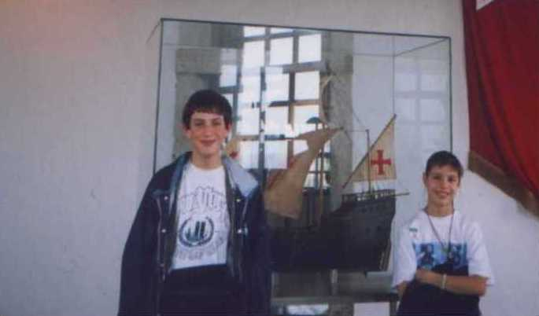
Boludos x 2
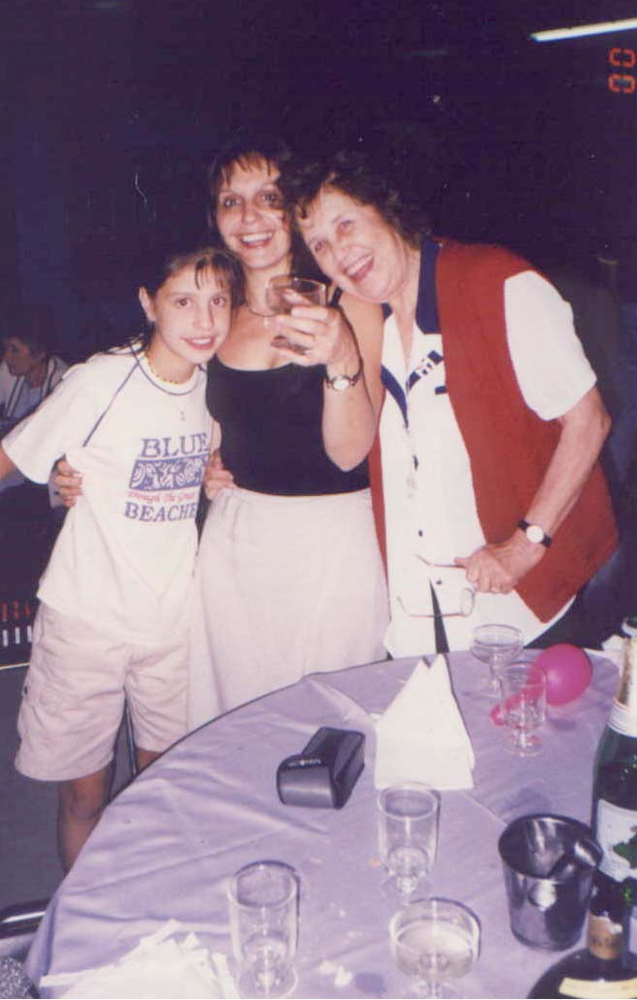
La llegada del 2Ky.
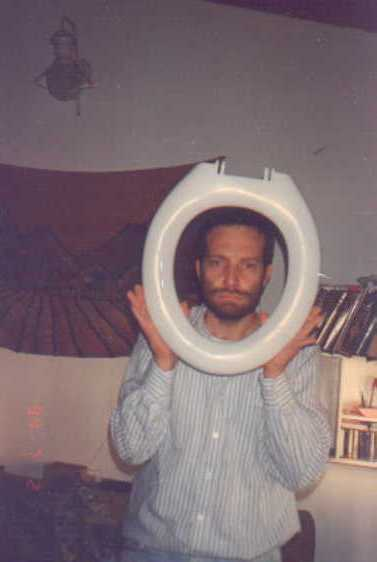
Cara de c...
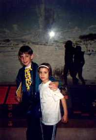
Cuáles son los monos?
Bajar la "Gran Colección" (Zip, 189 Kb.)